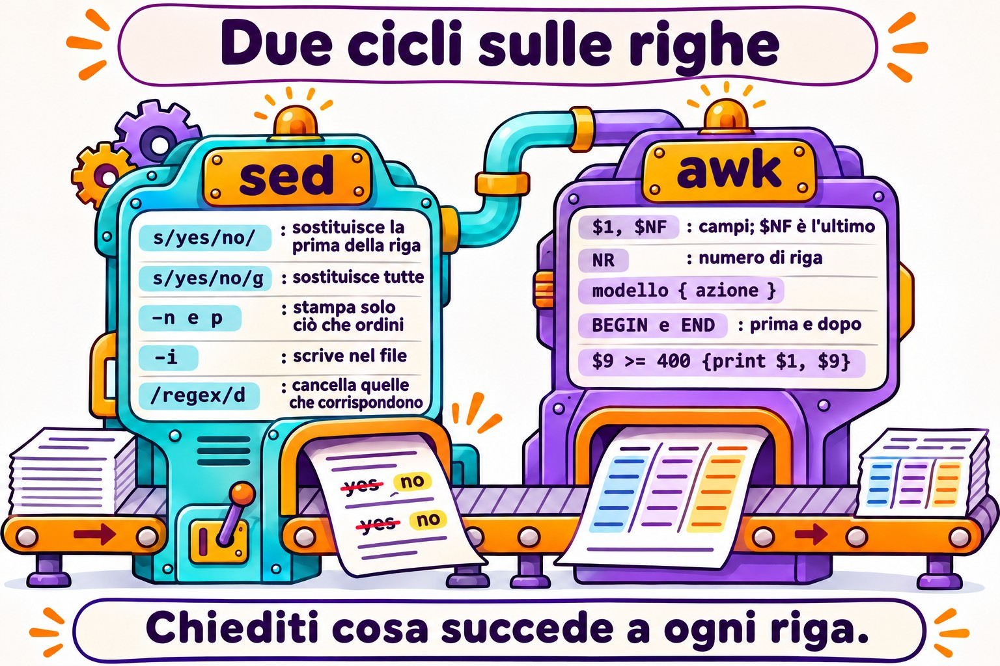
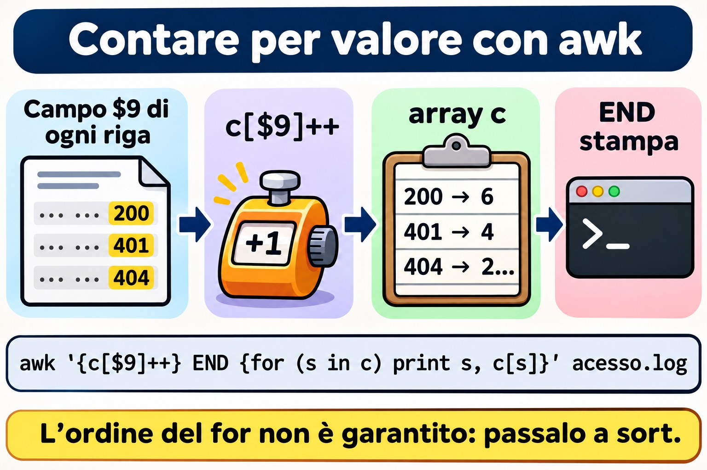
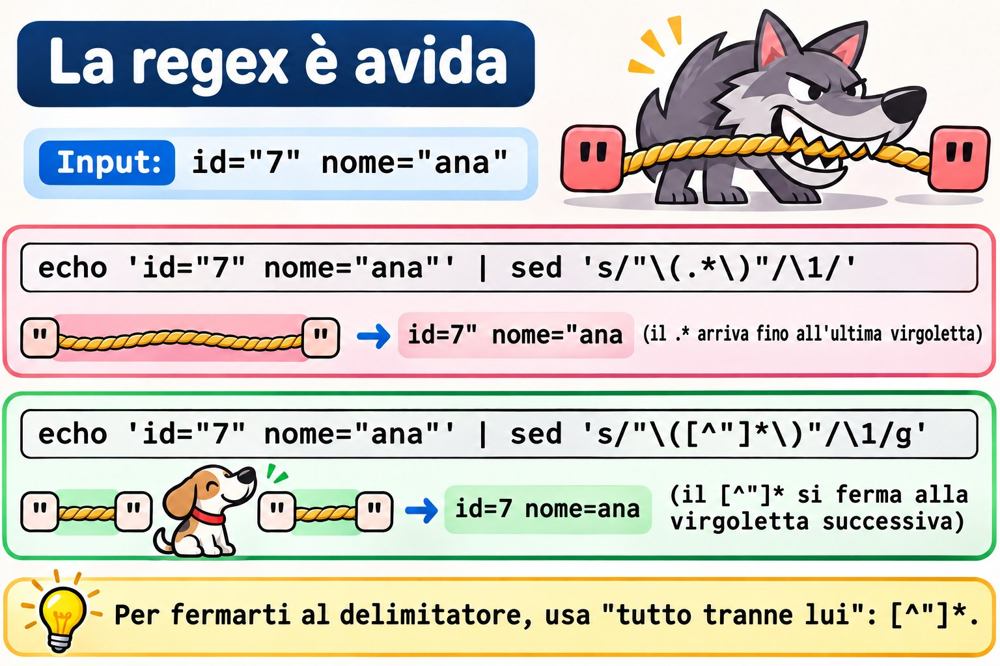
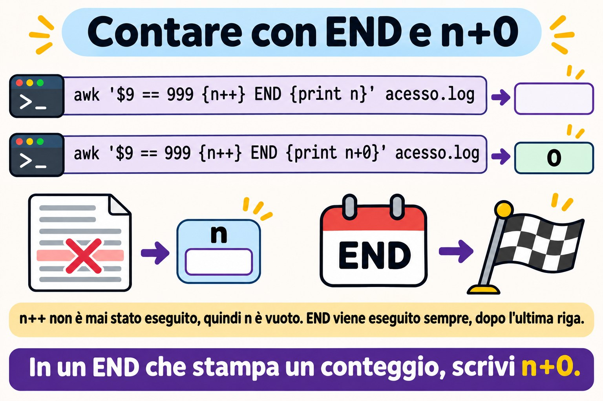

Lezione 3.4 · sed e awk
Nella Lezione 3.3 hai scelto le righe con grep. Oggi fai le altre due cose che ogni amministratore fa con il testo: modificare righe e calcolare con le colonne. sed sostituisce, cancella e inserisce righe, a schermo o dentro il file. awk divide ogni riga in campi, filtra per valore, somma, conta e formatta. Sono entrambi piccoli, sono su ogni macchina Linux, e sono esattamente ciò che uno script di produzione usa quando deve toccare un file di configurazione o estrarre un numero da un log. Alla fine chiudi la sfida del Modulo 3: i dieci IP che hanno sbagliato più volte la password su SSH, in una sola riga di comando, su entrambe le VM.
| Scheda | Lezione 3.4 |
|---|---|
| Modulo | M3 · Testo ed editor, lezione 4 di 5 |
| Quando | Settimana 8 |
| Alla fine sei in grado di | Mostrare, cancellare e sostituire righe con sed, per numero, per intervallo e per regex; usare gruppi, & e un altro delimitatore in s///; modificare un file sul posto con sed -i senza perdere nulla, con copia e verifica; separare i campi con awk, con il separatore predefinito e con -F; filtrare per valore, sommare, contare con i vettori e formattare con printf; incrociare due file con NR == FNR; passare variabili della shell ad awk senza litigare con le virgolette; sapere quando uno script awk di Rocky (gawk) non gira allo stesso modo su Debian (mawk); elencare gli IP che hanno sbagliato più volte la password su SSH, nel file e nel journal |
| Prerequisiti | Lezione 3.1 (virgolette, pipe, <( )); Lezione 3.2 (cut, sort, uniq -c, ~/lab32/acesso.log); Lezione 3.3 (BRE ed ERE, ~/lab33 con i campioni) |
| Durata | Circa 2h30 |
| Snapshot | m3a4-inicio e m3a4-fim su entrambe le VM |
1 · Riscaldamento
Tre domande, a memoria. Scrivi le risposte; le Soluzioni le controllano alla fine.
- Esegui
sed 's/yes/no/' app.confe lo schermo mostra il file con la sostituzione fatta. Scommessa:app.confè cambiato? - In un log di SSH, la data è
Nov 3, con due spazi, perché il giorno ha una sola cifra. Scommessa: cosa mostracut -d' ' -f2su quella riga? Eawk '{print $2}'? - Uno script
awkfunziona su Rocky. Copi lo stesso file su Debian, lo esegui, e non dà nessun errore. Scommessa: può uscire un risultato diverso?
2 · Perché conta
Quasi ogni disastro con sed e awk avviene in una sola riga, senza messaggio di errore:
| La richiesta | La risposta sbagliata | Cosa provoca |
|---|---|---|
"Cambia il server del database da 10.1.0.40 a 10.1.0.41 in app.conf" | sed 's/10.1.0.40/10.1.0.41/' app.conf | Lo schermo mostra la sostituzione, ma il file resta uguale: senza -i, sed scrive solo sull'output. E il punto della regex corrisponderebbe comunque a 10a1b0c40 |
"Decommenta PermitRootLogin in sshd_config" | sed -i 's/^#//' /etc/ssh/sshd_config | Decommenta tutte le righe che iniziano con #, comprese le frasi di spiegazione. sshd non accetta la configurazione e non parte al prossimo restart. Se eri connesso via SSH, è stata l'ultima volta |
| "Disattiva la password su SSH e mostra cosa è cambiato" | sed -n -i 's/yes/no/p' arquivo | -n con -i scrive nel file solo le righe stampate. Il file di configurazione diventa una riga sola. Eseguendolo di nuovo, diventa un file vuoto |
| "Quanti byte ha scaricato ogni IP oggi?" | cut per estrarre le colonne e la somma in un foglio di calcolo | Mezz'ora di copia e incolla. Un awk '{b[$1] += $10} END {...}' risponde in un secondo, e si rilancia domani |
| "Togli il giorno da ogni riga del log di SSH" | cut -d' ' -f2 | Funziona dal giorno 10 al 31 e restituisce una riga vuota dal giorno 1 al 9, perché i giorni a una cifra arrivano con due spazi. Lo script passa il test e fallisce nella prima settimana del mese |
| "Il report funziona su Rocky; su Debian esce vuoto" | Copiare lo stesso script awk su entrambe | Rocky ha gawk; Debian, mawk. Una funzione solo di gawk può semplicemente non funzionare in mawk, senza nessun errore |
sed e awk non sono difficili. Sono letterali: fanno esattamente ciò che è scritto, sull'intera riga, in tutte le righe. Chi lo sa prova prima, a schermo, e solo dopo scrive nel file.
3 · Modello mentale
sedeawksono un ciclo sulle righe.sedlegge una riga, applica i comandi, in ordine, e stampa il risultato.awklegge una riga, la divide in campi, verifica ogni pattern ed esegue l'azione di quelli che hanno corrisposto. Nessuno dei due torna indietro né guarda la riga successiva (a meno che tu non lo chieda). Pensa sempre "cosa succede a ogni riga?", e non "cosa succede al file?".
sed 's/yes/no/' app.conf
┌─────────────┐ lê uma linha ┌──────────────────┐ aplica s/yes/no/ ┌──────────────┐
│ app.conf │ ────────────────► │ espaço de padrão │ ───────────────────► │ imprime │
│ (só leitura)│ │ "Password... yes"│ (só a 1ª vez, │ na saída │
└─────────────┘ └──────────────────┘ sem o g) └──────────────┘
e repete para a próxima linha. Com -n, só imprime quando você manda (p).
Com -i, a "saída" é um arquivo novo que, no fim, toma o lugar do original.
awk '$9 >= 400 {print $1, $9}' acesso.log
linha: 192.168.5.7 - - [03/Nov/2026:08:02:30 +0100] "POST /login HTTP/1.1" 401 128
└── $1 ───┘ $2 $3 └──────── $4 ────────┘ └$5─┘ └─$6─┘ └─$7─┘ └─ $8 ──┘ $9 $10
NF = 10, $NF = $10
BEGIN { ... } roda uma vez, antes da primeira linha
padrão { ação } para cada linha: se o padrão é verdadeiro, roda a ação
END { ... } roda uma vez, depois da última linha (NR = total de linhas)Due conseguenze pratiche. Prima: sed senza -i non cambia mai il file, quindi si può provare a volontà. Seconda: awk separa i campi per qualsiasi sequenza di spazi e tabulazioni, e ignora gli spazi a inizio riga. Per questo non inciampa su Nov 3, mentre cut -d' ' inciampa.


4 · Concetto a livelli
Essenziale
sed, l'editor di flusso. Il nome viene da stream editor. Riceve testo da un file o da una pipe e scrive il risultato sull'output. La forma di quasi ogni uso è:
sed [opções] 'endereço comando' arquivoL'indirizzo dice su quali righe agisce il comando; senza indirizzo, agisce su tutte. Il comando dice cosa fare:
| Comando | Fa | Esempio |
|---|---|---|
p | Stampa la riga (di nuovo, se non hai usato -n) | sed -n '3p' arq mostra solo la riga 3 |
d | Cancella la riga dall'output | sed '1d' arq mostra tutto tranne la riga 1 |
s/regex/troca/ | Sostituisce la prima parte che corrisponde | sed 's/yes/no/' arq |
s/regex/troca/g | Sostituisce tutte le parti che corrispondono, nella riga | sed 's/:/ /g' arq |
q | Smette di leggere | sed '5q' arq è un head -n 5 |
| Indirizzo | Quali righe | Esempio |
|---|---|---|
N | La riga numero N | sed -n '3p' |
$ | L'ultima | sed -n '$p' è un tail -n 1 |
N,M | Dalla N alla M | sed -n '2,4p' |
/regex/ | Quelle che corrispondono alla regex | sed -n '/401/p' è un grep 401 |
/a/,/b/ | Dalla prima che corrisponde ad a fino alla successiva che corrisponde a b | sed -n '/^Port/,/^Password/p' |
endereço! | Quelle che non sono dell'indirizzo | sed '/^#/!d' lascia solo i commenti |
E le tre opzioni che usi ogni giorno:
| Opzione | Fa |
|---|---|
-n | Non stampa nulla da solo; solo ciò che comandi con p |
-E | Regex estesa, come grep -E della Lezione 3.3: +, ?, {}, | e ( ) senza barra |
-i | Scrive il risultato nel file stesso. -i.bak conserva prima una copia con il suffisso .bak |
awk, il linguaggio delle colonne. awk legge ogni riga, la divide in campi ed esegue un piccolo programma. La forma è:
awk 'padrão { ação }' arquivoSenza pattern, l'azione gira su ogni riga. Senza azione, la riga che ha corrisposto viene stampata intera. I nomi che ti servono:
| Nome | È | Esempio |
|---|---|---|
$0 | L'intera riga | awk '{print $0}' è un cat |
$1, $2... | Il primo, il secondo campo... | awk '{print $1}' |
NF | Quanti campi ha la riga | $NF è l'ultimo campo; $(NF-1), il penultimo |
NR | Il numero della riga corrente (alla fine, il totale) | awk 'NR == 3' è il sed -n '3p' |
-F | Il separatore di campi | awk -F: '{print $1}' /etc/passwd |
BEGIN, END | Prima della prima riga, dopo l'ultima | awk 'END {print NR}' è un wc -l |
I pattern sono confronti ($9 >= 400, $1 == "10.1.0.20"), regex (/Failed password/, $7 ~ /^\/api/) o entrambe le cose con &&, || e !. Le variabili non vanno dichiarate: partono valendo zero, o testo vuoto. Per questo {n++} conta, e {soma += $10} somma.
Le virgolette. Il programma di awk e di sed va sempre tra virgolette singole. Il $1 di awk è il primo campo; il $1 della shell è il primo argomento dello script. Tra virgolette doppie, la shell sostituisce il suo $1 prima che awk lo veda.
Intermedio
s/// da dentro.
| Parte | Fa | Esempio e risultato |
|---|---|---|
& | L'intera parte che ha corrisposto | echo 'Port 22' | sed 's/[0-9][0-9]*/[&]/' mostra Port [22] |
\(...\) e \1 | Gruppo nella BRE e il riferimento ad esso | sed 's/^\([^ ]*\) .*/\1/' lascia solo la prima parola |
(...) e \1 con -E | Lo stesso, nella ERE | sed -E 's/^([^ ]+) .*/\1/' |
g | Tutte le occorrenze della riga | s/\//_/g |
| Un numero | Solo l'N-esima occorrenza | s/\//_/2 sostituisce solo la seconda barra |
I (GNU) | Ignora le maiuscole | s/passwordauthentication/PA/I |
p con -n | Stampa solo le righe in cui c'è stata una sostituzione | sed -n 's/^Port /porta: /p' |
| Un altro delimitatore | Qualsiasi carattere subito dopo la s diventa il separatore | s|/home/student|~| invece di s/\/home\/student/~/ |
Il delimitatore è la prima cosa che salva un sed con i percorsi. Con la barra, ogni / del percorso ha bisogno di \/, e il comando diventa una staccionata. Con |, # o ,, diventa leggibile.
Più comandi. Separa con ; oppure usa più -e. I comandi girano in ordine, sulla stessa riga:
sed '/^[[:space:]]*#/d; /^[[:space:]]*$/d' conf.amostra
sed -e 's/yes/no/' -e '/^#/d' conf.amostraIl primo è il grep -Ev '^[[:space:]]*(#|$)' della Lezione 3.3, scritto in sed. L'ordine conta: se la prima sostituzione trasformasse una riga in commento, la seconda la vedrebbe già commentata.
Inserire, aggiungere, sostituire l'intera riga. In GNU sed, su una sola riga:
| Comando | Fa | Esempio |
|---|---|---|
i texto | Inserisce una riga prima | sed '1i # gerado pelo lab' arq |
a texto | Aggiunge una riga dopo | sed '/^Port/a # porta padrão' arq |
c texto | Sostituisce l'intera riga | sed '/^MaxAuthTries/c MaxAuthTries 4' arq |
y/abc/xyz/ | Sostituisce carattere per carattere, come tr | sed 'y/abc/ABC/' |
l | Mostra la riga con gli invisibili, come cat -A | sed -n '9l' conf.amostra mostra \t#ListenAddress 0.0.0.0$ |
awk che calcola.
| Vuoi | Programma |
|---|---|
| Contare le righe che corrispondono | '$9 >= 400 {n++} END {print n+0}' |
| Sommare una colonna | '{soma += $10} END {print soma}' |
Contare per valore (il sort | uniq -c di awk) | '{c[$9]++} END {for (s in c) print s, c[s]}' |
| Sommare per valore | '{b[$1] += $10} END {for (ip in b) print b[ip], ip}' |
| Formattare | printf "%-15s %10d\n", ip, b[ip]: testo allineato a sinistra su 15 posizioni, numero a destra su 10 |
| Ricevere un valore dalla shell | awk -v lim="$LIMITE" '$10 > lim' |
| Regex su un campo | '$7 ~ /^\/api/' e '$6 !~ /GET/' |
| Funzioni di testo | length($1), substr($4, 2, 11), tolower($0), split($4, p, ":") |
| Sostituire dentro il campo | sub(/regex/, "troca", $7) sostituisce il primo; gsub li sostituisce tutti |
| Saltare alla riga successiva | next |
c[$9]++ è un vettore associativo: l'indice è il testo stesso, "200", "401", "10.1.0.20". È ciò che rende awk così utile per i report. Un'attenzione: for (x in v) percorre gli indici in un ordine che non è garantito, e che cambia tra gawk e mawk. Ogni volta che l'ordine conta, manda l'output a sort.
Il separatore di output. In print $1, $2, la virgola diventa l'OFS, che vale uno spazio. Con -v OFS=';', diventa punto e virgola. Ma print da solo, o print $0, mostra la riga com'è entrata. Per ricomporre l'intera riga con il nuovo OFS, tocca un campo: {$1 = $1; print}.


Ponte Windows
| In Windows | In Linux | Attenzione |
|---|---|---|
(Get-Content app.conf) -replace '^PasswordAuthentication yes$', 'PasswordAuthentication no' | sed 's/^PasswordAuthentication yes$/PasswordAuthentication no/' app.conf | Il -replace di PowerShell ignora le maiuscole per impostazione predefinita; sed no. L'equivalente esatto è -creplace |
(Get-Content app.conf) -replace 'a', 'b' | Set-Content app.conf | sed -i 's/a/b/' app.conf | Le parentesi fanno leggere a PowerShell l'intero file prima di scrivere. Senza, Set-Content prova a scrivere sul file che è ancora aperto in lettura, e dà errore. sed -i risolve scrivendo su un file temporaneo |
$1, $2 nel -replace | \1, \2 in sed | Stessa idea di gruppo, sintassi diversa. In Notepad++, è \1 anche lì |
Get-Content acesso.log | ForEach-Object { ($_ -split '\s+')[0] } | awk '{print $1}' acesso.log | PowerShell conta da zero; awk, da uno |
Import-Csv -Delimiter ':' -Header nome,x,uid ... | awk -F: '{print $1, $3}' | Import-Csv capisce le virgolette nei CSV; awk -F, no |
Group-Object e Sort-Object Count -Descending | awk '{c[$1]++} END {...}' | sort -rn | |
Measure-Object -Property Bytes -Sum | awk '{s += $10} END {print s}' |
Avanzato
sed -i crea un file nuovo. Scrive il risultato in un file temporaneo, nella stessa cartella, e alla fine sostituisce l'originale con quello. GNU sed copia i permessi, ma il file è un altro, con un altro numero di inode. Questo ha tre conseguenze reali:
- Un link simbolico modificato con
sed -idiventa un file normale, e il file a cui puntava resta intatto. Per seguire il link:sed -i --follow-symlinks. - Un hard link (Lezione 2.8) smette di essere condiviso: l'altro nome continua a puntare al contenuto vecchio.
- Un log in corso di scrittura non va modificato con
sed -i. Il programma continua a scrivere nell'inode vecchio, ormai senza nome, e le righe nuove si perdono, occupando disco finché il programma non si riavvia.
-i.bak e il -ie che inganna. Il suffisso della copia va attaccato a -i. Per questo sed -ie 's/...//' arq non è "-i e -e": è -i con suffisso e, e ottieni un file arqe accanto. Su macOS e nei BSD, -i richiede sempre il suffisso (sed -i '' ...). In uno script che deve girare su entrambi, preferisci scrivere su un file nuovo e sostituire con mv.
Lo spazio di riserva. sed ha un secondo spazio, l'hold space, con i comandi h, H, g, G e x. Con esso si scrivono trucchi come sed -n '1!G;h;$p', che inverte il file come tac. Impara a riconoscerli; per scrivere cose simili, usa awk, che è leggibile.
Separatori con regex. Il -F di awk accetta regex: -F'[ :]+' separa per qualsiasi sequenza di spazi e due punti. Ma -F, non capisce i veri CSV: un campo "Rossi, Ana" diventa due. Per CSV con virgolette, gawk ha FPAT, e ci sono strumenti appositi, come csvtool.
Numero o testo. Un campo che sembra un numero viene confrontato come numero: $9 >= 400 funziona. Ma "80%" non sembra un numero. +0 forza la conversione e si ferma al primo carattere che non è una cifra: $5+0 di 80% è 80. È così che si legge df: df -P | awk 'NR > 1 && $5+0 >= 80 {print $6, $5}'.
Due file. NR conta le righe di tutti i file insieme; FNR, solo quelle del file corrente. Finché i due sono uguali, awk sta leggendo il primo file. È il modo classico di caricare una lista e usarla sul secondo, il join che la Lezione 3.2 aveva promesso:
awk 'NR == FNR {bloq[$1]; next} $1 in bloq' bloqueio.txt acesso.loggawk e mawk. gawk ha estensioni che mawk non ha: gensub(), asort(), asorti(), IGNORECASE, PROCINFO["sorted_in"], FPAT, -i inplace e \y come bordo di parola. Una funzione che non esiste dà errore subito. Una variabile speciale che non esiste, come IGNORECASE, diventa una variabile normale, e lo script gira in silenzio, con un altro risultato. Su Rocky, gawk --posix disattiva le estensioni, e gawk --lint avvisa quali hai usato: entrambi testano la portabilità prima che lo script arrivi su Debian.
awk esegue anche comandi. system("...") e "comando" | getline eseguono cose nella shell. In uno script awk che non hai scritto tu, cerca questi due prima di eseguirlo con sudo.
5 · Rocky × Debian
| Voce | rocky-lab (Rocky 9) | debian-lab (Debian 13) | Come verificare |
|---|---|---|---|
sed | GNU sed 4.8 | GNU sed 4.9 | sed --version | head -1 |
awk | gawk 5.1 | mawk 1.3.4 | readlink -f "$(command -v awk)" |
Versione di awk | awk --version oppure awk -W version | awk -W version | -W version funziona su entrambi |
Estensioni di gawk | Funzionano | gensub() dà errore; IGNORECASE viene ignorato, in silenzio | gawk --lint -f script.awk su Rocky |
| Testare la portabilità | gawk --posix -f script.awk | mawk -f script.awk | Esegui su entrambi e confronta l'output con diff |
gawk disponibile | Già presente | Solo se qualcuno l'ha installato (apt install gawk) | command -v gawk |
| Log delle password sbagliate in SSH | /var/log/secure, scritto da rsyslog, con rotazione settimanale | Solo nel journal, unit ssh | ls -l /var/log/secure*; journalctl -u ssh -n 3 |
| Journal | Volatile, a meno che tu non l'abbia cambiato nella Lezione 2.3 | Permanente | ls -ld /var/log/journal |
| Nome del processo nel log | sshd[PID] | Può comparire sshd-session[PID], perché OpenSSH 10 ha separato il processo della sessione | journalctl -u ssh -n 5 -o short |
sed -i su link simbolico | Rompe il link | Rompe il link | ls -l prima e dopo |
La riga che dà più fastidio è quella di awk. Sono entrambi awk veri, seguono POSIX e eseguono il 95% dei programmi allo stesso modo. È nell'altro 5% che uno script copiato da un server all'altro dà un risultato diverso senza avvisare. Nel Guasto B lo vedi succedere.
Anche quella del processo. Un grep 'sshd\[' trova le righe di Rocky e può non trovarne nessuna su Debian 13. Per questo il lab filtra per unit (journalctl -u ssh) e per testo (Failed password), e mai per nome del processo.
6 · Lab guidato
Sei student, su rocky-lab, e raggiungi debian-lab con ssh deb. Tutto avviene in ~/lab34, su entrambe le VM. sed -i si usa solo su copie dentro la cartella del lab. I file di sistema e i log reali vengono solo letti. Il Passo 7 è la sfida del Modulo 3.

Passo 0 · Snapshot, cartella e i file del lab
In Proxmox, crea lo snapshot m3a4-inicio di entrambe le VM. Su rocky-lab:
eval "$(ssh-agent -s)"; ssh-add
ssh -o BatchMode=yes deb hostname
mkdir -p ~/lab34; ssh deb 'mkdir -p ~/lab34'
cd ~/lab34
cp ~/lab33/acesso.log ~/lab33/ssh.amostra ~/lab33/conf.amostra ~/lab33/bloqueio.txt .
wc -l acesso.log ssh.amostra conf.amostra bloqueio.txt 15 acesso.log
12 ssh.amostra
11 conf.amostra
3 bloqueio.txt
41 totalSe ne manca qualcuno, ricrealo con il Passo 0 della Lezione 3.3 (acesso.log viene dalla Lezione 3.2). bloqueio.txt contiene 203.0.113.9, 198.51.100.4 e una riga vuota in fondo, di proposito. Ora le versioni, su entrambe le VM:
sed --version | head -1; readlink -f "$(command -v awk)"; awk -W version 2>/dev/null | head -1
ssh deb 'sed --version | head -1; readlink -f "$(command -v awk)"; awk -W version 2>/dev/null | head -1'Su Rocky dovresti vedere GNU sed 4.8 e awk che punta a gawk, versione 5.1. Su Debian, GNU sed 4.9 e awk che punta a mawk, versione 1.3.4. Annota cosa è uscito: il Guasto B dipende da questo. Copia i file su Debian:
scp acesso.log ssh.amostra conf.amostra bloqueio.txt deb:lab34/
ssh deb 'cd ~/lab34 && wc -l acesso.log ssh.amostra conf.amostra bloqueio.txt'Passo 1 · Mostrare e cancellare
Prima, sed come un head, un tail e un grep:
sed -n '3p' acesso.log
sed -n '$p' acesso.log
sed -n '2,4p' acesso.log | cut -d' ' -f110.1.0.20 - - [03/Nov/2026:08:01:02 +0100] "GET /docs HTTP/1.1" 200 2048
10.1.0.20 - - [03/Nov/2026:08:07:30 +0100] "GET / HTTP/1.1" 200 5120
10.1.0.31
10.1.0.20
192.168.5.7Ora vuoi vedere i tentativi di login falliti, le righe con 401. E dimentichi il -n.
Decidi 1 · Quante righe mostra sed '/401/p' acesso.log | wc -l?
- A) 4
- B) 15
- C) 19
- D) 11
Scegli la lettera prima di guardare la tabella.
sed '/401/p' acesso.log | wc -l
sed -n '/401/p' acesso.log | wc -l19
4| Se hai scelto | Risultato | Perché |
|---|---|---|
| A | ❌ Sbagliato | È il risultato con -n. Senza, sed stampa ogni riga alla fine del ciclo, e p stampa di nuovo quelle che hanno corrisposto. |
| B | ❌ Sbagliato | Sarebbe vero se p non facesse nulla. Fa qualcosa: stampa la riga un'altra volta. |
| C | ✅ Giusto | Le 15 righe, una volta ciascuna, più le 4 con 401 ripetute: 15 + 4 = 19. |
| D | ❌ Sbagliato | Sarebbero le righe senza 401 (15 − 4). Quello è sed '/401/d'. |
Da ricordare: p quasi sempre va con -n. Senza -n, p duplica le righe.
d fa il contrario: toglie la riga dall'output. Questo è il grep -Ev '^[[:space:]]*(#|$)' della Lezione 3.3, in sed:
sed '/^[[:space:]]*#/d; /^[[:space:]]*$/d' conf.amostraPort 22
PermitRootLogin no
PasswordAuthentication yes
MaxAuthTries 3I due comandi girano in ordine sulla stessa riga. Una riga cancellata dal primo non arriva al secondo: d termina subito il ciclo di quella riga.
Passo 2 · La sostituzione: s, g e il delimitatore
Vuoi sostituire le barre di un percorso con dei trattini bassi, per ottenere un nome di file.
Decidi 2 · Cosa mostra echo 'GET /a/b/c HTTP/1.1' | sed 's/\//_/'?
- A)
GET _a_b_c HTTP_1.1 - B)
GET _a/b/c HTTP/1.1 - C)
GET /a/b/c HTTP/1.1, senza modifiche - D) Un errore, a causa della barra dentro il pattern
Scegli la lettera prima di guardare la tabella.
echo 'GET /a/b/c HTTP/1.1' | sed 's/\//_/'
echo 'GET /a/b/c HTTP/1.1' | sed 's/\//_/g'
echo 'GET /a/b/c HTTP/1.1' | sed 's|/|_|g'
echo 'GET /a/b/c HTTP/1.1' | sed 's|/|_|2'GET _a/b/c HTTP/1.1
GET _a_b_c HTTP_1.1
GET _a_b_c HTTP_1.1
GET /a_b/c HTTP/1.1| Se hai scelto | Risultato | Perché |
|---|---|---|
| A | ❌ Sbagliato | È il risultato con g. Senza, s sostituisce solo la prima occorrenza di ogni riga. |
| B | ✅ Giusto | \/ è una barra letterale. La prima barra della riga diventa _, e il resto resta com'era. |
| C | ❌ Sbagliato | Ha corrisposto, e ha sostituito. s non cambia niente solo quando la regex non corrisponde in nessun punto della riga. |
| D | ❌ Sbagliato | Con \, la barra smette di essere delimitatore. Senza la \, allora sì: s///_/ dà unknown option to 's'. |
Da ricordare: senza g, solo la prima occorrenza di ogni riga. Con i percorsi, cambia il delimitatore: s|/|_|g si legge al primo sguardo.
Il numero al posto di g sceglie quale occorrenza: il 2 ha sostituito solo la seconda barra. Due usi che ripeterai molto: p con -n, che mostra solo le righe sostituite, e I, che ignora le maiuscole.
sed -n 's/^Port /porta: /p' conf.amostra
sed -n 's/passwordauthentication/PA/Ip' conf.amostraporta: 22
PA yes
#PA noPasso 3 · Gruppi, & e la regex golosa
Da acesso.log, vuoi solo l'IP e il codice di stato. Con -E, le parentesi memorizzano la parte, e \1 e \2 la restituiscono:
sed -E 's/^([^ ]+) .*" ([0-9]{3}) .*/\1 \2/' acesso.log | head -410.1.0.20 200
10.1.0.31 200
10.1.0.20 200
192.168.5.7 401[^ ]+ è "uno o più caratteri che non sono spazio": l'IP intero e nient'altro. .*" ingoia tutto fino all'ultima virgoletta seguita da uno spazio, e ([0-9]{3}) prende le tre cifre che vengono subito dopo. Per mandare un log a un fornitore senza esporre le macchine, azzera l'ultimo ottetto:
sed -E 's/^([0-9]+\.[0-9]+\.[0-9]+)\.[0-9]+/\1.0/' acesso.log | cut -d' ' -f1 | sort -u
echo 'Port 22' | sed 's/[0-9][0-9]*/[&]/'10.1.0.0
192.168.5.0
203.0.113.0
Port [22]& è l'intera parte che ha corrisposto, senza bisogno di un gruppo. Ora l'errore che tutti commettono una volta. Vuoi togliere le virgolette dai valori di una riga di configurazione:
Decidi 3 · Cosa mostra echo 'id="7" nome="ana"' | sed 's/"\(.*\)"/\1/'?
- A)
id=7 nome=ana - B)
id=7" nome="ana - C)
id="7" nome=ana - D)
7
Scegli la lettera prima di guardare la tabella.
echo 'id="7" nome="ana"' | sed 's/"\(.*\)"/\1/'
echo 'id="7" nome="ana"' | sed 's/"\([^"]*\)"/\1/g'id=7" nome="ana
id=7 nome=ana| Se hai scelto | Risultato | Perché |
|---|---|---|
| A | ❌ Sbagliato | È ciò che volevi. Per questo il gruppo non deve attraversare le virgolette: [^"]*, con g. |
| B | ✅ Giusto | .* è goloso: corrisponde alla parte più lunga possibile. Va dalla prima virgoletta della riga fino all'ultima, e spariscono solo quelle due. |
| C | ❌ Sbagliato | Sarebbe una regex che comincia a corrispondere dalla fine. La regex parte dal primo punto possibile della riga, la prima virgoletta. |
| D | ❌ Sbagliato | s sostituisce solo la parte che ha corrisposto. id=, prima della prima virgoletta, resta. |
Da ricordare: .* va il più lontano che può. Per fermarti al prossimo delimitatore, usa "tutto tranne lui": [^"]*, [^ ]*, [^:]*.


Passo 4 · sed -i senza spaventi
Ora sed scriverà in un file. Lavora su una copia. Il copione sicuro ha tre passi: vedere la differenza a schermo, scrivere con copia, verificare.
cp conf.amostra app.conf
sed 's/^PasswordAuthentication yes/PasswordAuthentication no/' app.conf | diff app.conf -; echo "diff saiu com $?"7c7
< PasswordAuthentication yes
---
> PasswordAuthentication no
diff saiu com 1Il - dice a diff di leggere l'input dalla pipe. L'output mostra esattamente una riga cambiata, la 7. L'1 di diff significa "sono diversi", e non è un errore. Se l'output mostrasse venti righe, avresti scoperto il problema prima di rovinare il file. Ora scrivi, con copia, e verifica:
ls -i app.conf
sed -i.bak 's/^PasswordAuthentication yes/PasswordAuthentication no/' app.conf
ls -i app.conf; ls app.conf*
diff app.conf.bak app.confIl numero di inode cambia: sed -i ha scritto un file nuovo e ha sostituito il vecchio con quello. app.conf.bak è l'originale, e diff mostra le stesse righe dell'anteprima. Ora un link simbolico, per vedere cosa gli succede:
ln -s app.conf link.conf; ls -l link.conf
sed -i 's/^Port 22/Port 2222/' link.conf
ls -l link.conf app.conf; grep -H '^Port' link.conf app.confPrima, ls -l mostra link.conf -> app.conf. Dopo, link.conf è un file normale, senza la freccia, con Port 2222. app.conf resta con Port 22. Su un server in cui /etc/algo.conf è un link a un file gestito, questa sostituzione passa inosservata finché qualcuno non modifica il file vero e non cambia niente. Con sed -i --follow-symlinks, sed modifica il file a cui punta il link. Pulisci e ricomincia dall'originale:
rm link.conf; cp conf.amostra app.conf; rm -f app.conf.bakIl tuo collega ti manda un comando con "le opzioni unite, che è più veloce":
Decidi 4 · Cosa succede con sed -ie 's/^PasswordAuthentication yes/PasswordAuthentication no/' app.conf?
- A)
app.confviene modificato, e nient'altro - B)
app.confviene modificato, e compare unapp.confecon il contenuto vecchio - C) Errore: opzione non valida
- D) Non cambia niente, perché la
eesegue la sostituzione come comando della shell
Scegli la lettera prima di guardare la tabella.
sed -ie 's/^PasswordAuthentication yes/PasswordAuthentication no/' app.conf
ls app.conf*
grep -c '^PasswordAuthentication no' app.conf app.confeapp.conf app.confe
app.conf:1
app.confe:0| Se hai scelto | Risultato | Perché |
|---|---|---|
| A | ❌ Sbagliato | Sarebbe il caso di sed -i -e, con le opzioni separate. Unite, la e diventa un'altra cosa. |
| B | ✅ Giusto | Il suffisso della copia va attaccato a -i. -ie è "-i con suffisso e". La sostituzione è stata fatta, e la copia si chiama app.confe. |
| C | ❌ Sbagliato | La sintassi è valida, ed è per questo che inganna: nessun avviso. |
| D | ❌ Sbagliato | La e come flag di s (alla fine, s/.../.../e) esegue comandi in GNU sed. Come opzione attaccata a -i, è solo un suffisso. |
Da ricordare: scrivi -i.bak oppure -i -e, mai -ie. Un ls dopo sed -i mostra le copie con il nome strano.
Pulisci l'avanzo: rm app.confe.
Passo 5 · Campi con awk
Ora le colonne. awk separa ogni riga per gli spazi e numera i pezzi:
awk '{print $1, $9}' acesso.log | head -3
awk 'END {print NR}' acesso.log
head -1 ssh.amostra | awk '{print $2, $NF, NF}'
head -1 ssh.amostra | cut -d' ' -f2 | cat -A10.1.0.20 200
10.1.0.31 200
10.1.0.20 200
15
3 ssh2 14
$Nov 3 ha due spazi. Per cut -d' ', c'è un campo vuoto tra di essi, e -f2 esce in bianco, come mostra cat -A. Per awk, qualsiasi sequenza di spazi è un solo separatore: $2 è 3. NF dice che la riga ha 14 campi, e $NF è l'ultimo, ssh2.
Metti il programma tra virgolette doppie, "tanto per cambiare":
Decidi 5 · Cosa mostra awk "{print $1}" acesso.log | head -1?
- A)
10.1.0.20 - B) La riga intera
- C) Un errore di sintassi di
awk - D) Una riga vuota
Scegli la lettera prima di guardare la tabella.
awk "{print $1}" acesso.log | head -1
echo "{print $1}"10.1.0.20 - - [03/Nov/2026:08:00:01 +0100] "GET / HTTP/1.1" 200 5120
{print }| Se hai scelto | Risultato | Perché |
|---|---|---|
| A | ❌ Sbagliato | Sarebbe con le virgolette singole. Tra virgolette doppie, la shell sostituisce $1 prima che awk lo veda. |
| B | ✅ Giusto | Nel terminale, il $1 della shell è vuoto. awk riceve {print }, e print senza niente stampa la riga intera. |
| C | ❌ Sbagliato | {print } è un programma valido. Per questo l'errore è insidioso: nulla avvisa. |
| D | ❌ Sbagliato | print senza argomento non stampa vuoto; stampa $0. Dentro uno script che ha ricevuto argomenti, $1 sarebbe il primo argomento, e il risultato cambierebbe ancora. |
Da ricordare: il programma di awk va tra virgolette singole, sempre. Il valore della shell entra con -v.
-F cambia il separatore. In /etc/passwd, sono i due punti. Gli utenti umani hanno UID da 1000 in su:
awk -F: '$3 >= 1000 {print $1, $3}' /etc/passwd
awk -F: '$3 >= 1000 && $3 < 65534 {print $1, $3}' /etc/passwdIl primo elenca anche nobody, con UID 65534, che è un account di sistema, in entrambe le distribuzioni. Il secondo lascia solo le persone. Su Rocky, dovrebbe uscire student e gli utenti che hai creato nel Modulo 2.
Passo 6 · Filtrare, sommare e contare
Un pattern senza azione stampa la riga. Un confronto è un pattern:
awk '$9 >= 400' acesso.log | wc -l
awk '$9 >= 400 {print $1, $9, $7}' acesso.log | head -3
awk '$7 ~ /^\/api/ {print $1, $7, $9}' acesso.log
awk '$6 !~ /GET/' acesso.log | wc -l9
192.168.5.7 401 /login
192.168.5.7 401 /login
203.0.113.9 403 /admin
10.1.0.20 /api/status 500
10.1.0.31 /api/status 500
5Ora ciò che cut non fa: i calcoli. La somma dei byte, i byte per IP e le richieste per stato:
awk '{s += $10} END {print s}' acesso.log
awk '{b[$1] += $10} END {for (ip in b) printf "%-15s %10d\n", ip, b[ip]}' acesso.log | sort -k2,2nr
awk '{c[$9]++} END {for (s in c) print s, c[s]}' acesso.log | sort1068928
10.1.0.45 1048576
10.1.0.20 12352
192.168.5.7 4608
10.1.0.31 2112
203.0.113.9 1280
200 6
401 4
403 1
404 2
500 2b[$1] += $10 somma i byte in un vettore il cui indice è l'IP. printf allinea, e sort -k2,2nr ordina per il secondo campo, come numero, dal maggiore al minore. Il sort finale è obbligatorio: for (ip in b) non promette nessun ordine, e il mawk di Debian restituisce un ordine diverso da quello di gawk. Esegui lo stesso su Debian e confronta.
Un valore della shell entra con -v:
LIMITE=1000
awk -v lim="$LIMITE" '$10 > lim {print $1, $10}' acesso.log | wc -l6Il tuo script di allerta conta gli errori 999, che non esistono, e manda il numero per e-mail:
Decidi 6 · Cosa mostra awk '$9 == 999 {n++} END {print n}' acesso.log?
- A)
0 - B) Una riga vuota
- C) Niente: nessuna riga ha corrisposto, quindi
ENDnon gira - D) Un errore, perché
nnon è mai stata definita
Scegli la lettera prima di guardare la tabella.
awk '$9 == 999 {n++} END {print n}' acesso.log | cat -A
awk '$9 == 999 {n++} END {print n+0}' acesso.log$
0| Se hai scelto | Risultato | Perché |
|---|---|---|
| A | ❌ Sbagliato | È ciò che mostra n+0. Senza il calcolo, la variabile mai toccata vale testo vuoto. |
| B | ✅ Giusto | n++ non è mai girato. n è vuota, e print stampa vuoto e l'a capo: cat -A mostra solo il $. |
| C | ❌ Sbagliato | END gira sempre, dopo l'ultima riga, che qualcosa abbia corrisposto o no. |
| D | ❌ Sbagliato | In awk, le variabili non hanno bisogno di dichiarazione. Esiste, e vale zero o vuoto a seconda dell'uso. |
Da ricordare: in un END che stampa un conteggio, scrivi n+0. L'e-mail con "0 errori" è diversa dall'e-mail con " errori".


Infine, due file. bloqueio.txt ha la lista degli IP bloccati nel firewall. Quali richieste del log vengono da loro?
awk 'NR == FNR {bloq[$1]; next} $1 in bloq' bloqueio.txt acesso.log203.0.113.9 - - [03/Nov/2026:08:03:10 +0100] "GET /admin HTTP/1.1" 403 256
203.0.113.9 - - [03/Nov/2026:08:04:20 +0100] "GET /wp-login.php HTTP/1.1" 404 512
203.0.113.9 - - [03/Nov/2026:08:06:30 +0100] "GET /.env HTTP/1.1" 404 512Finché NR == FNR, awk è nel primo file: salva ogni IP come indice del vettore e salta alla riga successiva con next. Nel secondo file, $1 in bloq è vero per gli IP della lista. La riga vuota di bloqueio.txt diventa un indice vuoto, che nessuna riga del log ha, e non dà fastidio. È il join della Lezione 3.2, senza dover ordinare niente prima.
Passo 7 · Sfida del modulo: i dieci IP che hanno sbagliato più volte la password
La richiesta è quella di ogni inizio di incidente: "chi sta cercando di entrare su SSH?". Prima sul campione, dove conosci la risposta. Le righe di password sbagliata hanno due formati:
... Failed password for root from 203.0.113.9 port 51022 ssh2
... Failed password for invalid user admin from 198.51.100.4 port 40110 ssh2Decidi 7 · Quale espressione di awk prende l'IP in entrambi i formati?
- A)
$11 - B)
$13 - C)
$(NF-3) - D)
$NF-3
Scegli la lettera prima di guardare la tabella.
awk '/Failed password/ {print $11}' ssh.amostra | sort | uniq -c | sort -rn
awk '/Failed password/ {print $(NF-3)}' ssh.amostra | sort | uniq -c | sort -rn | head -10
awk '/Failed password/ {print $NF-3}' ssh.amostra | head -1 2 admin
2 203.0.113.9
1 test
1 oracle
1 10.1.0.31
3 203.0.113.9
2 198.51.100.4
1 192.0.2.66
1 10.1.0.31
-3| Se hai scelto | Risultato | Perché |
|---|---|---|
| A | ❌ Sbagliato | Funziona sulla riga normale. In quella con invalid user, ci sono due parole in più, e $11 diventa il nome dell'utente: admin, oracle e test compaiono come se fossero IP. |
| B | ❌ Sbagliato | È il contrario: azzecca invalid user e, nella riga normale, prende la porta. |
| C | ✅ Giusto | Contando dalla fine, il formato è lo stesso: IP, port, numero, ssh2. L'IP è sempre il quarto a partire dal fondo. |
| D | ❌ Sbagliato | Senza parentesi, è ($NF) - 3: il testo ssh2 vale 0 come numero, e esce -3. |
Da ricordare: quando l'inizio della riga varia e la fine no, conta dalla fine: $NF, $(NF-1), $(NF-3).
I pareggi (2 admin e 2 203.0.113.9) possono uscire in un altro ordine, a seconda della lingua configurata nella VM; i numeri non cambiano. Quando il formato può variare di più, per esempio con un nome utente che contiene uno spazio, cerca la parola invece di contare:
awk '/Failed password/ {for (i = 1; i <= NF; i++) if ($i == "from") print $(i+1)}' ssh.amostra | sort | uniq -c | sort -rnIl risultato è lo stesso. Entrambi i modi prendono anche l'IPv6, cosa che il grep -oE 'from [0-9.]+' della Lezione 3.3 taglia al primo :.
Ora il log vero. Su Rocky, /var/log/secure e le rotazioni della settimana:
sudo cat /var/log/secure-* /var/log/secure 2>/dev/null | awk '/Failed password/ {print $(NF-3)}' | sort | uniq -c | sort -rn | head -10Su Debian, solo il journal, unit ssh. -o cat toglie la data e il nome del processo, ma la fine della riga è la stessa:
ssh -t deb "sudo journalctl -u ssh --no-pager -o cat | awk '/Failed password/ {print \$(NF-3)}' | sort | uniq -c | sort -rn | head -10"Nota il \$(NF-3). L'intero comando è tra virgolette doppie, e la shell locale vedrebbe $(NF-3) come sostituzione di comando: proverebbe a eseguire un programma chiamato NF-3, darebbe errore, e awk riceverebbe print senza niente. La barra protegge il $. Fare l'escape a mano in ogni comando non scala. Il modo professionale è uno script, con il programma di awk tra virgolette singole, che gira allo stesso modo su entrambe le VM:
cat > top10.sh <<'EOF'
#!/bin/bash
# top10.sh: i 10 IP con più password sbagliate in SSH (Rocky: file; Debian: journal)
{ sudo cat /var/log/secure 2>/dev/null || sudo journalctl -u ssh -u sshd --no-pager -o cat; } |
awk '/Failed password/ {print $(NF-3)}' | sort | uniq -c | sort -rn | head -10
EOF
chmod +x top10.sh
./top10.sh
scp top10.sh deb:lab34/
ssh -t deb 'bash ~/lab34/top10.sh''EOF' con le virgolette impedisce alla shell di toccare il contenuto dell'here-doc (Lezione 3.1). || usa il journal quando il file non esiste. -t dà un terminale a ssh perché sudo possa chiedere la password. Lo script conta solo le righe Failed password. Le righe authentication failure di PAM descrivono lo stesso tentativo, e contarle entrambe raddoppierebbe il numero.
Se l'output è vuoto, il tuo lab non ha subito nessun attacco, il che è un bene. Per vedere lo script al lavoro, sbaglia la password apposta: da rocky-lab, esegui ssh -o PubkeyAuthentication=no naoexiste@10.1.0.52 e digita qualsiasi cosa tre volte. Esegui di nuovo ssh -t deb 'bash ~/lab34/top10.sh': l'IP di rocky-lab compare con 3.
Se hai reso permanente il journal di Rocky nella Lezione 2.3, anche lui ha queste righe: sudo journalctl -u sshd --no-pager -o cat | awk ... dà lo stesso risultato del file. Se il journal è ancora volatile, ha solo ciò che è successo dopo l'ultimo boot, e /var/log/secure è la fonte giusta.
7 · Rompi e ripara
Guasto A · Lo script che cancella la configurazione
Lo scenario: un collega ha scritto uno script per disattivare il login con password sui server. Voleva che lo script "mostrasse la riga cambiata", e per questo ha usato -n e p. Siccome voleva scrivere nel file, ha aggiunto -i. Prepara lo script, su rocky-lab, su una copia:
cd ~/lab34
cat > desliga-senha.sh <<'EOF'
#!/bin/bash
# desliga-senha.sh: desliga o login por senha e mostra a linha que mudou
arq=${1:-app.conf}
sed -n -i 's/^PasswordAuthentication yes/PasswordAuthentication no/p' "$arq"
echo "feito em $arq"
EOF
chmod +x desliga-senha.sh
cp conf.amostra app.conf
./desliga-senha.sh app.conffeito em app.confOsserva. Lo script non ha mostrato nessuna riga, solo il feito. Non ha dato errore, e lo status è 0.
Decidi 8 · Cosa contiene ora app.conf?
- A) Le 11 righe, con la sostituzione fatta
- B) Una riga sola:
PasswordAuthentication no - C) Niente: il file è vuoto
- D) Le 11 righe, senza la sostituzione, perché
-nha impedito la scrittura
Scegli la lettera prima di guardare la tabella.
wc -l app.conf; cat app.conf
./desliga-senha.sh app.conf
wc -c app.conf1 app.conf
PasswordAuthentication no
feito em app.conf
0 app.conf| Se hai scelto | Risultato | Perché |
|---|---|---|
| A | ❌ Sbagliato | È ciò che voleva il collega. Ma, con -i, l'"output" di sed è il file nuovo, e -n ordina di non scrivere nulla oltre a ciò che stampa p. |
| B | ✅ Giusto | Solo la riga sostituita è stata stampata, ed è stata stampata dentro il file. Per questo lo schermo è rimasto vuoto: la riga che doveva comparire è andata in app.conf. |
| C | ⚠️ Non ancora | È ciò che succede la seconda volta. Non c'è più nessun yes da sostituire, p non stampa niente, e il file resta a 0 byte. |
| D | ❌ Sbagliato | -n non impedisce la scrittura. Decide cosa viene scritto. |
Da ricordare: con -i, tutto ciò che sed stamperebbe va nel file. -n insieme a -i ha senso solo se vuoi che il file resti soltanto con le righe di p.
Diagnostica. Su un server vero, questo script lascia sshd_config con una riga. sshd parte con i valori predefiniti, il che può perfino funzionare, e nessuno se ne accorge finché qualcuno non cerca l'AllowGroups o la Port che c'erano. La seconda esecuzione, da cron o per errore, lascia il file vuoto. E non c'è nessuna copia.

Ripara. Lo script giusto scrive con copia, senza -n, e mostra la differenza confrontando il prima con il dopo:
cat > desliga-senha.sh <<'EOF'
#!/bin/bash
# desliga-senha.sh: disattiva il login con password, con copia e verifica
arq=${1:-app.conf}
sed -i.bak 's/^PasswordAuthentication yes/PasswordAuthentication no/' "$arq" || exit 2
if cmp -s "$arq.bak" "$arq"; then
echo "nada a mudar em $arq"
else
diff "$arq.bak" "$arq" || true
fi
EOF
cp conf.amostra app.conf
./desliga-senha.sh app.conf
./desliga-senha.sh app.conf
wc -l app.conf7c7
< PasswordAuthentication yes
---
> PasswordAuthentication no
nada a mudar em app.conf
11 app.confcmp -s non mostra niente e risponde solo con lo status: 0 se i file sono uguali. Ora lo script può girare dieci volte e il risultato è lo stesso, e ogni esecuzione dice cosa ha fatto. Un dettaglio: la seconda esecuzione sovrascrive il .bak con il file già modificato. Su un server, un suffisso con la data, come -i".$(date +%F-%H%M%S).bak", conserva tutte le versioni.
Guasto B · Il report che sparisce su Debian
Lo scenario: un report conta, per IP, i fallimenti di login nel form del sito. Chi l'ha scritto, su Rocky, sapeva che alcuni client mandano post in minuscolo, e ha usato IGNORECASE per non dipendere da questo. Il report è andato su tutti i server. Su quelli Debian, dice sempre che non ci sono stati fallimenti. Prepara, su rocky-lab:
cat > relatorio.awk <<'EOF'
# relatorio.awk: logins que falharam no formulário, por IP
BEGIN { IGNORECASE = 1 }
/post \/login/ && $9 == 401 { falhas[$1]++ }
END { for (ip in falhas) printf "%-15s %d\n", ip, falhas[ip] }
EOF
awk -f relatorio.awk acesso.log
scp relatorio.awk deb:lab34/
ssh deb 'cd ~/lab34 && awk -f relatorio.awk acesso.log; echo "status: $?"'192.168.5.7 4
status: 0Osserva. Su Rocky, i quattro fallimenti di 192.168.5.7. Su Debian, niente, con status 0. Nessun avviso.
Diagnostica. Su Rocky, chiedi a gawk di comportarsi come un awk POSIX e di segnalare ciò che non è standard:
gawk --posix -f relatorio.awk acesso.log; echo "status: $?"
gawk --lint -f relatorio.awk acesso.log--posix riproduce Debian: nessuna riga, status 0. La prima riga di --lint dice che `IGNORECASE' is a gawk extension. In mawk, e in gawk --posix, IGNORECASE è una variabile qualsiasi, che hai creato e messo a 1 senza nessun effetto. La regex /post \/login/ continua a distinguere le maiuscole, il log ha POST, e niente corrisponde. --lint può anche lamentarsi di falhas[$1]++ su un elemento ancora vuoto; quell'avviso è innocuo, perché un elemento vuoto vale zero nella somma.
Confronta con una funzione che ha solo gawk: gawk --posix 'BEGIN {print gensub(/a/, "b", "g", "aaa")}' termina con fatal: function `gensub' not defined e status 2. Una funzione che manca dà un errore forte. Una variabile speciale che manca non dà nessun errore.
Decidi 9 · Quale riparazione fa funzionare il report allo stesso modo su entrambe le VM?
- A) Installare
gawksu Debian - B) Sostituire il pattern con
tolower($0) ~ /post \/login/ && $9 == 401 - C) Eseguire su Debian con
awk -v IGNORECASE=1 -f relatorio.awk - D) Mettere
#!/usr/bin/gawk -fnella prima riga dello script
Scegli la lettera prima di guardare la tabella.
sed -i.bak 's/^BEGIN.*//; s|^/post|tolower($0) ~ /post|' relatorio.awk
cat relatorio.awk
gawk --posix -f relatorio.awk acesso.log
scp relatorio.awk deb:lab34/; ssh deb 'cd ~/lab34 && awk -f relatorio.awk acesso.log'# relatorio.awk: logins que falharam no formulário, por IP
tolower($0) ~ /post \/login/ && $9 == 401 { falhas[$1]++ }
END { for (ip in falhas) printf "%-15s %d\n", ip, falhas[ip] }
192.168.5.7 4
192.168.5.7 4| Se hai scelto | Risultato | Perché |
|---|---|---|
| A | ⚠️ Funziona, ma con un costo | Risolve su questo server, ma lo script resta rotto su ogni server dove nessuno ha installato gawk. E ora l'awk di ogni Debian dipende da ciò che è stato installato lì. |
| B | ✅ Giusto | tolower() è POSIX ed esiste in entrambi. La riga diventa minuscola solo per il confronto; $1 e il resto non cambiano. |
| C | ❌ Sbagliato | -v crea la variabile solo prima. In mawk, resta una variabile normale, senza effetto sulla regex. |
| D | ⚠️ Funziona, ma con un costo | Chiarisce che lo script ha bisogno di gawk, e dà un errore onesto (No such file) dove non esiste. È una buona scelta quando ti serve un'estensione; qui, non serve. |
Da ricordare: uno script awk che girerà su più di una distribuzione passa prima da gawk --posix e da gawk --lint. Se ti serve un'estensione, dichiara gawk nella prima riga.
La morale
I due guasti sono lo stesso errore di fondo: fidarsi che "è girato senza errori" significhi "ha fatto ciò che volevo". sed -n -i ha fatto esattamente ciò che è scritto: ha scritto solo le righe stampate. Anche IGNORECASE in mawk: ha creato una variabile. Gli strumenti sono quelli di oggi: anteprima a schermo, con diff, prima di qualsiasi -i; copia con -i.bak; verifica dopo, con cmp o diff; e, per awk che viaggia, il test con --posix e --lint. Nella vita reale, in un vero sshd_config, ci sono ancora altri due livelli. Prima di ricaricare, sudo sshd -t controlla la sintassi e non tocca niente. E, invece di modificare il file principale con sed, crea un tuo file in /etc/ssh/sshd_config.d/, con un nome che venga prima degli altri, come 00-senha.conf: in sshd, la prima definizione vale (Lezione 3.3), il file del pacchetto resta intatto, e annullare significa cancellare un file. Tieni aperta una sessione SSH mentre provi la nuova.
8 · Trappole
| Digiti o vedi | Cosa succede | Quello giusto |
|---|---|---|
sed 's/a/b/' arq e il file "non è cambiato" | Senza -i, sed scrive solo sull'output | Anteprima con | diff arq -; poi sed -i.bak |
sed -n -i 's/.../.../p' arq | Il file resta solo con le righe sostituite; la seconda volta, vuoto | Mai -n con -i; mostra la modifica con diff arq.bak arq |
sed -ie '...' arq | Crea una copia chiamata arqe | sed -i.bak '...' oppure sed -i -e '...' |
sed -i su un link simbolico | Il link diventa file normale; il file originale non cambia | sed -i --follow-symlinks, oppure modifica la destinazione (readlink -f) |
sed -i su un log in corso di scrittura | Il programma continua a scrivere nel file vecchio, senza nome | Non modificare i log dal vivo; filtra verso un altro file |
sed 's/\/home\/student/~/' | Funziona, ma nessuno lo legge | sed 's|/home/student|~|' |
sed 's/10.1.0.40/10.1.0.41/' | Il punto corrisponde a qualsiasi carattere | sed 's/10\.1\.0\.40/10.1.0.41/' |
sed 's/"\(.*\)"/\1/' | .* va fino all'ultima virgoletta | sed 's/"\([^"]*\)"/\1/g' |
sed '/401/p' senza -n | Le righe con 401 escono due volte | sed -n '/401/p' |
cut -d' ' -f2 su un log con Nov 3 | Campo vuoto nei giorni da 1 a 9 | awk '{print $2}' |
awk "{print $1}" | La shell sostituisce $1; awk stampa la riga intera | Virgolette singole; valori della shell con -v |
awk '{print $NF-3}' | Fa il calcolo: ultimo campo meno 3 | $(NF-3) |
END {print n} senza nessuna riga contata | Stampa una riga vuota | END {print n+0} |
for (k in v) per un report ordinato | L'ordine non è garantito, e cambia tra gawk e mawk | ... | sort |
IGNORECASE, gensub, asort in uno script per più distro | Su Debian, mawk ignora in silenzio o dà errore | tolower(), sub/gsub; prova con gawk --posix e --lint |
awk -F, su un CSV con "Rossi, Ana" | Il campo con la virgola diventa due | gawk con FPAT, oppure uno strumento per CSV |
ssh deb "awk '{print $(NF-3)}'" | La shell locale prova a eseguire il comando NF-3 | Script con virgolette singole all'interno, oppure \$ |
9 · Quiz
Dieci domande, senza consultare. Scrivi la lettera o la risposta di ciascuna e solo dopo apri le Soluzioni.
1. Cosa cambia nel file app.conf dopo sed 's/yes/no/g' app.conf? E dopo sed -i 's/yes/no/' app.conf, su una riga che ha yes due volte?
2. Quale comando mostra solo dalla riga 5 alla 10 del file log.txt?
- A)
sed '5,10p' log.txt - B)
sed -n '5,10p' log.txt - C)
sed -n '5p;10p' log.txt - D)
sed '5,10d' log.txt
3. Scrivi un sed che sostituisca, alla fine di ogni riga, .log con .log.old, usando &.
4. Cosa mostra echo '2026-11-03' | sed -E 's/([0-9]{4})-([0-9]{2})-([0-9]{2})/\3\/\2\/\1/'? Riscrivilo con un altro delimitatore, senza le barre rovesciate nella sostituzione.
5. Esegui sed -ie 's/80/8080/' site.conf. Quali file esistono nella cartella dopo, e cosa c'è in ciascuno?
6. Quale comando mostra il nome e la directory personale (campi 1 e 6) degli utenti con shell /bin/bash in /etc/passwd?
- A)
awk '{print $1, $6}' /etc/passwd - B)
awk -F: '$7 == "/bin/bash" {print $1, $6}' /etc/passwd - C)
cut -d: -f1,6 /etc/passwd | grep bash - D)
awk -F: '/bash/ {print $1 $6}' /etc/passwd
7. Scrivi un awk che mostri la media dei byte (campo 10) di acesso.log. Cosa mostra il tuo programma su un file vuoto?
8. Cos'è NR == FNR e a cosa serve in un awk con due file?
9. Uno script awk con IGNORECASE = 1 funziona su Rocky e non trova niente su Debian, senza errori. Perché? Come l'avresti scoperto sulla stessa Rocky?
10. Which command replaces every occurrence of http:// with https:// in site.conf, editing the file in place and keeping a backup copy?
- A)
sed 's/http:\/\//https:\/\//g' site.conf > site.conf - B)
sed -i.orig 's|http://|https://|g' site.conf - C)
sed -n -i 's|http://|https://|gp' site.conf - D)
sed -i 's|http://|https://|' site.conf
10 · Flashcard e promemoria
Da sapere a memoria
sedeawksono un ciclo sulle righe: ciò che scrivi accade a ogni riga.- Senza
-i,sednon cambia mai il file. Prova a volontà. pva con-n.-nnon va mai con-i.s/a/b/sostituisce la prima occorrenza della riga;s/a/b/g, tutte;s/a/b/2, solo la seconda.&è la parte che ha corrisposto;\1è il primo gruppo. Con-E, i gruppi sono( )senza barra.- Percorso nel pattern: cambia il delimitatore,
s|/a/b|/c/d|. .*è goloso. Per fermarti al delimitatore:[^"]*,[^ ]*.- Il copione di
-i: anteprima con| diff arq -, scrittura con-i.bak, verifica condiff arq.bak arq. -ieè-icon suffissoe. Scrivi-i.bakoppure-i -e.sed -icrea un file nuovo: il link simbolico diventa file normale; usa--follow-symlinks.- In
awk:$0la riga,$1il primo campo,NFquanti campi,$NFl'ultimo,NRil numero di riga. awksepara per qualsiasi sequenza di spazi;cut -d' ', per ogni spazio.- Il programma di
awkva tra virgolette singole. Il valore della shell entra con-v. $(NF-3)è il quarto campo dalla fine;$NF-3è un calcolo.END {print n+0}mostra0quando non è stato contato niente.for (k in v)non ha ordine: termina consort.NR == FNRè "sono ancora nel primo file".- Rocky:
gawk. Debian:mawk. Lo script che viaggia passa dagawk --posixegawk --lint.
Da consultare
| Domanda | Comando |
|---|---|
| Una riga per numero | sed -n '3p' arq |
| Un intervallo di righe | sed -n '5,10p' arq |
| Dalla riga che corrisponde ad A a quella che corrisponde a B | sed -n '/A/,/B/p' arq |
| Cancellare commenti e righe bianche | sed '/^[[:space:]]*#/d; /^[[:space:]]*$/d' arq |
| Sostituire tutte le occorrenze | sed 's/velho/novo/g' arq |
| Sostituire solo nelle righe con "x" | sed '/x/s/velho/novo/' arq |
| Mostrare solo le righe sostituite | sed -n 's/velho/novo/p' arq |
| Anteprima di una sostituzione | sed 's/velho/novo/' arq | diff arq - |
| Modificare sul posto, con copia | sed -i.bak 's/velho/novo/' arq |
| Inserire prima, aggiungere dopo, sostituire la riga | sed '/x/i texto', sed '/x/a texto', sed '/x/c texto' |
| Vedere tabulazioni e fine riga | sed -n 'l' arq |
| Alcuni campi | awk '{print $1, $9}' arq |
| Un altro separatore | awk -F: '{print $1, $7}' /etc/passwd |
| Righe per valore di un campo | awk '$9 >= 400' arq |
| Regex su un campo | awk '$7 ~ /^\/api/' arq |
| Sommare una colonna | awk '{s += $10} END {print s+0}' arq |
| Contare per valore | awk '{c[$9]++} END {for (k in c) print k, c[k]}' arq | sort |
| Sommare per valore | awk '{b[$1] += $10} END {for (k in b) print b[k], k}' arq | sort -rn |
| Colonne allineate | printf "%-15s %10d\n", $1, $10 |
| Righe del file 2 il cui campo 1 è nella lista | awk 'NR == FNR {l[$1]; next} $1 in l' lista arq |
| Disco sopra l'80% | df -P | awk 'NR > 1 && $5+0 >= 80 {print $6, $5}' |
Quale awk è questo | readlink -f "$(command -v awk)" |
| I 10 IP con più password sbagliate | awk '/Failed password/ {print $(NF-3)}' | sort | uniq -c | sort -rn | head -10 |
Flashcard
| Fronte | Retro |
|---|---|
sed 's/a/b/' arq ha cambiato il file? | No: senza -i, solo l'output |
sed '/x/p' senza -n | Le righe con x escono due volte |
s/\//_/ in /a/b | _a/b: solo la prima |
s|/|_|2 | Sostituisce solo la seconda occorrenza |
& nella sostituzione | L'intera parte che ha corrisposto |
\1 | Il primo gruppo: \( \) nella BRE, ( ) con -E |
s/"\(.*\)"/\1/ in a="1" b="2" | a=1" b="2: .* è arrivato fino all'ultima virgoletta |
sed -ie | Copia con suffisso e: arqe |
sed -n -i '...p' | Il file resta solo con le righe stampate |
sed -i su un link simbolico | Il link diventa file normale |
sed -i e l'inode | Cambia: è un file nuovo |
y/abc/ABC/ | Sostituisce carattere per carattere, come tr |
$NF e $(NF-1) | L'ultimo e il penultimo campo |
NR e FNR | Riga nel totale; riga nel file corrente |
awk "{print $1}" nel terminale | La riga intera: la shell ha mangiato $1 |
$NF-3 | Ultimo campo meno 3, come numero |
END {print n} senza niente contato | Riga vuota; usa n+0 |
-v OFS=';' e print da solo | La riga esce com'è entrata; usa $1 = $1 per ricomporla |
$5+0 di 80% | 80 |
IGNORECASE in mawk | Variabile normale, senza effetto, senza errore |
gensub in mawk | Errore: la funzione non esiste |
gawk --posix e gawk --lint | Verificare, su Rocky, se lo script gira in mawk |
11 · Checklist di uscita
- [ ] Mostro, cancello e sostituisco righe con
sed, per numero, intervallo e regex, e spiego perchépsenza-nduplica. - [ ] Uso
g, numero,I,&, gruppi con\1e un altro delimitatore ins///, ed evito la regex golosa con[^x]*. - [ ] Modifico un file sul posto con anteprima,
-i.bake verifica, e spiego-ie,-n -ie il link simbolico. - [ ] Separo i campi con
awk, con e senza-F, e spiego perché non inciampa sugli spazi ripetuti. - [ ] Filtro per valore, sommo, conto con un vettore e formatto con
printf, terminando consortquando l'ordine conta. - [ ] Incrocio due file con
NR == FNRe passo valori della shell con-v. - [ ] Provo uno script
awkcongawk --posixe--lintprima di portarlo su Debian. - [ ] Elenco i 10 IP con più password sbagliate in SSH, con un solo script, su entrambe le VM.
Ultimo esercizio, senza guardare. Tutto su debian-lab: entra con ssh deb e lavora in ~/lab34. Lì awk è mawk. Senza aprire questa lezione:
- Da
/etc/passwd, mostra il nome e la shell degli utenti la cui shell non termina innologinné infalse, in due colonne allineate. - Con un solo
sed, senza toccareconf.amostra, generaativo.conf: senza commenti (con o senza rientro), senza righe bianche, e conMaxAuthTries 3sostituito daMaxAuthTries 4. - Da
acesso.log, mostra per ogni codice di stato il numero di richieste e il totale dei byte, ordinato per codice. - Da
ssh.amostra, mostra ogni utente provato nelle righeFailed password, contrassegnato comeexistenteoinexistente, con il conteggio. - Copia
/etc/ssh/sshd_configin~/lab34/sshd.copia. Nella copia, sostituisci la riga#MaxAuthTries 6conMaxAuthTries 3, con copia di sicurezza, e mostra la differenza. Il file vero non viene toccato.
Apri le Soluzioni solo dopo questo, o dopo tre tentativi.
Reboot e verifica. Prima di riavviare, salva le risposte che non devono cambiare, su entrambe le VM:
cd ~/lab34
awk -f relatorio.awk acesso.log > rel-antes.txt
ssh deb 'cd ~/lab34 && awk -f relatorio.awk acesso.log > rel-antes.txt'
ssh -t deb 'sudo reboot'
sudo rebootDopo il ritorno, su rocky-lab:
eval "$(ssh-agent -s)"; ssh-add
cd ~/lab34
awk -f relatorio.awk acesso.log | diff - rel-antes.txt && echo "Rocky: igual"
ssh deb 'cd ~/lab34 && awk -f relatorio.awk acesso.log | diff - rel-antes.txt && echo "Debian: igual"'
cp conf.amostra app.conf; ./desliga-senha.sh app.conf; ./desliga-senha.sh app.conf
./top10.sh
ssh -t deb 'bash ~/lab34/top10.sh'I due report uguali, su entrambe le VM. desliga-senha.sh che mostra la differenza la prima volta e nada a mudar la seconda. E top10.sh con gli stessi IP di prima. Su Debian, il journal è permanente, e i tentativi del Passo 7 sono ancora lì. Su Rocky, lo script legge /var/log/secure, che sopravvive al reboot. Se il journal di Rocky è ancora volatile, un sudo journalctl -u sshd -g 'Failed password' --no-pager ora non mostra i tentativi di prima del boot. È il motivo per cui lo script preferisce il file.
Snapshot di chiusura. Restano su entrambe le VM: la cartella ~/lab34, con i campioni, top10.sh, desliga-senha.sh e relatorio.awk riparati. La Lezione 3.5 usa conf.amostra e acesso.log in vim. I file delle lezioni precedenti restano lì, e /srv/equipe resta a 3770 root:equipe:
sudo find /srv/equipe -maxdepth 0 -printf '%M %m %u:%g %p\n'
ssh -t deb "sudo find /srv/equipe -maxdepth 0 -printf '%M %m %u:%g %p\n'"Sul nodo Proxmox:
qm snapshot 201 m3a4-fim
qm snapshot 202 m3a4-fim12 · Nella vita reale
Missione della settimana, sola lettura. Tre server reali che amministri. Su ciascuno, senza cambiare niente. Il sed di questa missione non porta mai -i:
- Quale
awke qualesedha ogni server:readlink -f "$(command -v awk)"; awk -W version 2>/dev/null | head -1; sed --version | head -1. Annota dove ègawke dove èmawk. - I dieci IP che hanno sbagliato di più la password su SSH, con il tuo script, senza copiarlo sul server:
ssh -t servidor 'bash -s' < ~/lab34/top10.sh. Se il server usa/var/log/auth.log, cambia il percorso in una copia dello script. Qualche IP è della tua rete? - I dischi sopra l'80%:
df -P | awk 'NR > 1 && $5+0 >= 80 {print $6, $5}'. Nessuna riga è la risposta migliore. - Gli utenti che possono entrare con una shell:
awk -F: '$7 !~ /(nologin|false)$/ {print $1, $3, $7}' /etc/passwd. Qualche nome che non riconosci? - Su un server web, gli IP che hanno scaricato di più:
sudo awk '{b[$1] += $10} END {for (ip in b) print b[ip], ip}' /var/log/httpd/access_log | sort -rn | head(su Debian,/var/log/apache2/access.logoppure/var/log/nginx/access.log). Controlla prima, conhead -1, che il campo 10 sia davvero quello dei byte. - Gli script che usano
sed -isenza copia:sudo grep -rnE 'sed .*-[a-zA-Z]*i' /usr/local/bin /usr/local/sbin /etc/cron.d /etc/cron.daily 2>/dev/null. In ogni riga, cerca il-ninsieme, il-ie, e la mancanza di.bak. Ognuno è un candidato al Guasto A. - Sui server Debian, gli script
awkche dipendono dagawk:sudo grep -rnlE 'IGNORECASE|gensub|asorti?|PROCINFO|FPAT' /usr/local/bin /usr/local/sbin /etc/cron.d 2>/dev/null. Ogni file è un candidato al Guasto B.
Per il diario. Una riga per server: nome · awk (gawk ou mawk) · sed · top 3 IPs com senha errada · IPs internos entre eles · discos acima de 80% · usuários com shell que você não reconhece · scripts com sed -i perigoso · scripts que dependem do gawk. Accanto a ogni scoperta, cosa faresti e chi dovrebbe approvare. Non correggere niente questa settimana: la missione è guardare.
Sfida della settimana. Scrivi, sulla tua postazione, un relatorio-ssh.awk che riceva l'output del journal o di /var/log/secure e mostri, in una tabella allineata con printf, gli IP, il totale di password sbagliate, quanti utenti diversi ha provato ogni IP e se qualcuno di essi esiste. Prova con gawk --posix e con --lint prima di eseguirlo sui server Debian. Un IP che prova molti utenti diversi è un robot; uno che prova sempre lo stesso utente esistente è un'altra storia, e merita una conversazione con il titolare dell'account.
Domani, senza guardare. Prima di aprire il terminale, rispondi a memoria: perché sed 's/a/b/' arq non cambia il file? Cosa succede con sed -n -i '...p', la prima e la seconda volta? Cos'è la e in sed -ie? Perché awk azzecca $2 di Nov 3 e cut -d' ' sbaglia? Cos'è $(NF-3) e perché non $NF-3? Perché uno script con IGNORECASE sparisce su Debian senza errore? Poi, su una delle VM, esegui echo 'a/b/c' | sed 's|/|-|2' e printf 'x\n' | awk '$1 == "y" {n++} END {print n; print n+0}' | cat -A, e spiega ogni risultato ad alta voce, dicendo su quale VM ti trovi.
13 · Con DeepTutor
Usa il DeepTutor della tua rete locale dopo il lab, non al suo posto. I comandi iniziano con !:
!quiz Aula 3.4: dieci domande nuove sused,awk,-ie le differenze tragawkemawk.!explica sed -i: il file temporaneo, l'inode nuovo, il link simbolico e-i.bak, passo per passo.!feynman padrão e ação no awk: spieghi tu comeawklegge ogni riga, e lui indica dove sei stato vago.!quebra sed que apaga: descrive unsed -iche ha rovinato un file e ti consegna, una alla volta, gli output diwc -l,ls -liedifffinché non trovi la causa.!quiz 3.4: domande con piccolisedper prevedere l'output.!cartoes Aula 3.4: le flashcard della sezione 10, in ordine di ripasso.!erro: incolla ilsedo l'awkche ha dato un risultato strano, con due o tre righe dell'input, e lui dice la causa probabile e cosa provare.!revisao Aula 3.4: cosa ripassare prima della Lezione 3.5, in base a ciò che hai sbagliato finora.
Soluzioni commentate
Riscaldamento
- No. Senza
-i,sedlegge il file e scrive il risultato sull'output; il file resta uguale. È il Passo 4. cut -d' ' -f2mostra una riga vuota: tra i due spazi c'è un campo vuoto.awk '{print $2}'mostra3, perché tratta qualsiasi sequenza di spazi come un solo separatore. È il Passo 5.- Sì. Rocky ha
gawke Debian hamawk. Una variabile speciale digawk, comeIGNORECASE, diventa una variabile normale inmawk, e lo script gira senza errori con un altro risultato. È il Guasto B.
Quiz
- Dopo il primo, non cambia niente nel file: lo schermo mostra tutte le occorrenze sostituite, ma senza
-isednon scrive. Dopo il secondo, il file cambia, ma solo la prima occorrenza di ogni riga: la riga con dueyesresta connoeyes, perché manca ilg. - B.
| Opzione | Risultato | Perché |
|---|---|---|
| A | ❌ Sbagliato | Senza -n, mostra il file intero e ripete le righe da 5 a 10. |
| B | ✅ Giusto | -n zittisce la stampa automatica, e p stampa solo l'intervallo. |
| C | ❌ Sbagliato | Mostra solo la riga 5 e la riga 10, non ciò che sta in mezzo. |
| D | ❌ Sbagliato | Mostra tutto tranne le righe da 5 a 10. |
sed 's/\.log$/&.old/' arquivo.\.è un punto vero,$ancora alla fine della riga, e&restituisce il.logche ha corrisposto, con.olddopo.a.logdiventaa.log.old;b.log.xnon cambia, perché il suo.lognon è alla fine.- Mostra
03/11/2026. Con#come delimitatore, le barre della sostituzione non hanno bisogno di\:sed -E 's#([0-9]{4})-([0-9]{2})-([0-9]{2})#\3/\2/\1#'. - Due file:
site.conf, modificato, esite.confe, con il contenuto originale.-ieè-icon suffissoe. E, senza ilg, solo il primo80di ogni riga è diventato8080: una rigax 80 80diventax 8080 80. - B.
| Opzione | Risultato | Perché |
|---|---|---|
| A | ❌ Sbagliato | Senza -F:, awk separa per spazi. Quasi ogni riga di /etc/passwd è un campo solo, e $6 esce vuoto. |
| B | ✅ Giusto | Separa per i due punti, confronta la shell, campo 7, con il testo esatto, e mostra i campi 1 e 6. |
| C | ❌ Sbagliato | cut ha già tolto il campo della shell. grep bash troverebbe solo chi ha bash nel nome o nella directory personale. |
| D | ❌ Sbagliato | Corrisponde a bash in qualsiasi punto della riga, e $1 $6 senza virgola incolla i due campi, senza spazio. |
awk '{s += $10} END {if (NR > 0) print s/NR; else print "sem dados"}' acesso.logmostra71261.9. Senza l'if, su un file vuoto,gawksi ferma condivision by zero attemptede status2;mawkpuò stampare qualcosa comenaninvece di fermarsi. Con l'if, entrambi diconosem dados.NRconta le righe di tutti i file;FNR, solo quelle del file corrente. I due sono uguali solo finchéawklegge il primo file. ConNR == FNR {lista[$1]; next}, salvi il primo file in un vettore, e nel secondo usi$1 in listaper filtrare. È iljoinsenza ordinare.IGNORECASEè un'estensione digawk. Inmawk, è una variabile qualsiasi, senza effetto; la regex continua a distinguere le maiuscole e non corrisponde aPOST. Niente dà errore. Su Rocky,gawk --posix -f script.awkriproduce il risultato vuoto, egawk --lint -f script.awkavvisa cheIGNORECASEè un'estensione.- B.
| Opzione | Risultato | Perché |
|---|---|---|
| A | ❌ Sbagliato | Il > della shell svuota site.conf prima che sed lo legga. Ti ritrovi con un file vuoto. |
| B | ✅ Giusto | Modifica sul posto, conserva l'originale in site.conf.orig, sostituisce tutte le occorrenze con g, e | come delimitatore evita di fare l'escape delle barre. |
| C | ❌ Sbagliato | Con -n e -i, il file resta solo con le righe sostituite. |
| D | ❌ Sbagliato | Senza copia e senza g: sostituisce solo la prima occorrenza di ogni riga. |
Ultimo esercizio
Su debian-lab, in ~/lab34:
awk -F: '$7 !~ /(nologin|false)$/ {printf "%-12s %s\n", $1, $7}' /etc/passwdCompaiono root e student con /bin/bash, gli utenti che hai creato con una shell, e sync, con /bin/sync, un vecchio account di sistema che esegue solo il comando sync. Su Debian, nologin sta in /usr/sbin/nologin, e la regex con $ prende entrambi i percorsi.
sed -e '/^[[:space:]]*#/d' -e '/^[[:space:]]*$/d' -e 's/^MaxAuthTries 3$/MaxAuthTries 4/' conf.amostra > ativo.conf
cat ativo.confPort 22
PermitRootLogin no
PasswordAuthentication yes
MaxAuthTries 4La redirezione va su un altro file; conf.amostra non cambia. L'ordine dei -e qui non altera il risultato, perché la riga di MaxAuthTries non è un commento.
awk '{n[$9]++; b[$9] += $10} END {for (s in n) print s, n[s], b[s]}' acesso.log | sort200 6 1067008
401 4 512
403 1 256
404 2 1024
500 2 128La somma dei byte dà gli stessi 1068928 del Passo 6. Due vettori con lo stesso indice, e il sort alla fine, perché mawk restituisce gli indici in un altro ordine.
awk '/Failed password/ {print ($9 == "invalid" ? "inexistente: " $11 : "existente: " $9)}' ssh.amostra | sort | uniq -c 1 existente: student
2 existente: root
2 inexistente: admin
1 inexistente: oracle
1 inexistente: test? : sceglie tra due valori: se il campo 9 è invalid, l'utente è nell'11; se no, è nel 9. Qualsiasi soluzione che dia le stesse cinque righe vale, per esempio con if ed else.
cp /etc/ssh/sshd_config ~/lab34/sshd.copia
sed 's/^#MaxAuthTries 6$/MaxAuthTries 3/' sshd.copia | diff sshd.copia -
sed -i.bak 's/^#MaxAuthTries 6$/MaxAuthTries 3/' sshd.copia
diff sshd.copia.bak sshd.copiaL'anteprima e il diff finale mostrano la stessa riga, con < #MaxAuthTries 6 e > MaxAuthTries 3. Se non mostrano niente, la riga sul tuo Debian è scritta in un altro modo: grep -n MaxAuthTries sshd.copia mostra come, e aggiusti il pattern. /etc/ssh/sshd_config non è stato toccato: verifica con diff /etc/ssh/sshd_config sshd.copia.bak, che non deve mostrare niente.